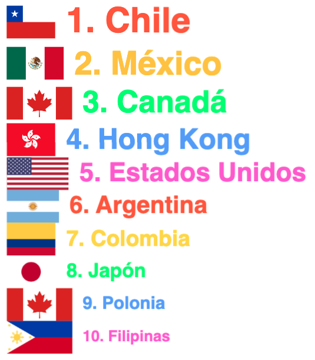

Desde el comienzo de este siglo, hemos visto como una de las expresiones musicales ha crecido exponencialmente: el género urbano. Comenzando con grandes artistas, como Daddy Yankee, quien dio el inicio a una nueva forma de hacer música, el reggaeton se ha desarrollado hasta el punto de ser el máximo exponente musical en el mundo.
El género urbano ha evolucionado hasta convertirse en un tipo de música dividida en diversas ramas, como el trap, el dembow y el neoperreo. Actualmente, su auge musical se ve demostrado en la cantidad de reproducciones y la omnipresencia que alcanza a lo largo del mundo. En esta línea, latinoamérica se ha convertido en un nuevo mercado musical para el género urbano. Hoy por hoy, la región logra que los artistas locales y sus creaciones se desarrollen en un mercado que, a diferencia del siglo pasado, puede competir contra la industria del resto del mundo.
El país con más superoyentes: Chile
¿Qué son los superoyentes?
Son los usuarios de Spotify definidos como los más apasionados y comprometidos con sus artistas favoritos y la música que les gusta. Se caracterizan por reproducir a un artista o a una banda de forma repetida, siguiéndolo de cerca, agregándole en playlists, creando listas de reproducción con su música y mostrando un interés por su música en su totalidad.
Latinoamérica es uno de los lugares donde se pueden encontrar más superoyentes, y a nivel mundial, Chile es el país número uno en esta categoría. La plataforma de streaming lider, Spotify, reveló que aproximadamente un 2% de los oyentes mensuales de un artista promedio son catalogados como súper oyentes. De la misma forma, representan más del 18% de las reproducciones mensuales globales.
A lo largo de 2023, el impacto de los usuarios en América Latina ha sido tal que de los 10 países con más super oyentes, 4 de ellos son latinos, teniendo a Chile en el primer lugar, a México en el segundo, a Argentina en el sexto y a Colombia en el séptimo.
Que Latinoamérica tenga tantos super oyentes demuestra la fidelidad de la región y el crecimiento exponencial en el cual se encuentra la industria. Asimismo, el fenómeno también se traduce en el desarrollo creciente de los artistas locales en sus carreras musicales.
Ahora bien, los superoyentes pueden ser de todos los géneros. Sin embargo, quien se lleva la mayor cantidad es el urbano. En una zona caracterizada por la variabilidad musical, como la salsa, la cumbia, el rock, el merengue, la zamba, el tango, la bachata, y muchos otros, el reggaeton y el trap se han robado el protagonismo.
Aterrizando el tema al plano nacional, a modo de ejemplo, siendo Chile una nación rica y diversa en gustos musicales, actualmente el top 10 de canciones más escuchadas de Spotify a nivel país, son del género urbano. Además, el constante apoyo a los artistas locales se refleja en que los cantantes al momento de lanzar sus creaciones y en el pasar de las semanas, reciben un constante apoyo. Por ejemplo, en las 5 canciones más escuchadas de artistas chilenos, ya en las primeras semanas obtienen millones de reproducciones.
Algo de toda Latinoamérica
Pero este caso de gran apoyo a la música de la región, con predominancia en lo urbano, no es solo de los países con superoyentes.
Esto se puede reflejar en lo más escuchado en este año 2023. Año en el cual en toda Latinoamérica, dentro de los más escuchados, los artistas provinientes de la región superan ampliamente a los del resto del mundo. Y también, esto mismo se refleja en el género que representa a los artistas, siendo solo el urbano, el que tiene mayoría, superando a todo el resto de los géneros.
Y esto no solo se demuestra en los artistas más escuchados, sino también en las canciones. Siguiendo la lógica que ocurre en los artistas, demostrando que esta sintonía es de toda América Latina.
A nivel mundial
La música latina no se queda encerrada en sus fronteras. Una de las características de su versatilidad es que se acoplan a las distintas culturas a lo largo del mundo. Es por esto que no es raro escuchar, por ejemplo, un hit urbano argentino en algún país de Europa en el verano.
El evidente crecimiento de la influencia latina, y cómo ha logrado exponer en distintas partes de otros continentes, se ve reflejado en que 5 de las 10 canciones de 2023 más escuchadas a nivel mundial provienen de artistas latinoamericanos, todos del género urbano.
En ese sentido, se puede ver que artistas como Bizarrap, Bad Bunny y Peso Pluma son solo algunos de los ejemplos que explican cómo actualmente Latinoamérica se posiciona como un nuevo mercado, creciente exponencialmente, en el área, logrando que artistas locales y sus creaciones suenen más, y en todas partes.